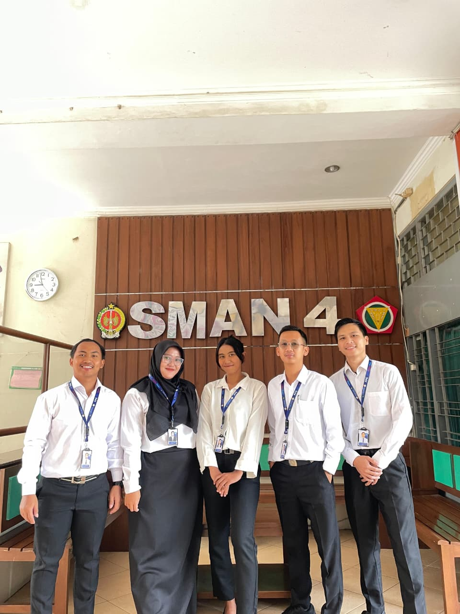
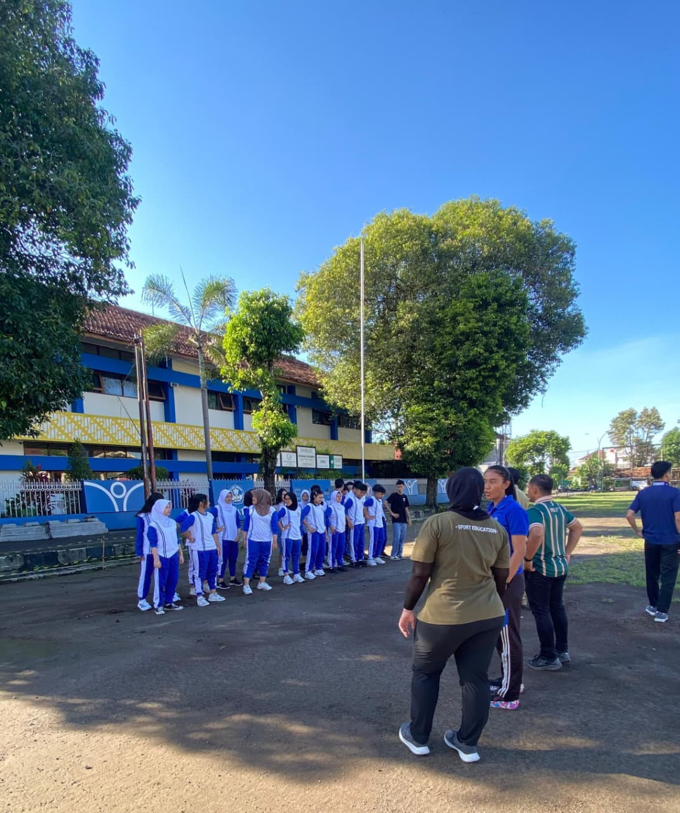

Highlight Reel
Galeri &
Dokumentasi Praktik
Rekam jejak visual dan audiovisual dari implementasi Modul Ajar, interaksi dengan peserta didik, serta dinamika pembelajaran PJOK di lapangan maupun di kelas.
Koleksi Foto
Potret aksi dan kolaborasi selama kegiatan.

